Cheyenne Mountain Zoo Redesign
Making ticket buying way less of a headache.

Summary
I had to redesign the CMZ website to make buying tickets easier. The old site was confusing, and the outcome is a clean prototype that makes checking out super simple.
My Role
I was the main UX designer and researcher. I did everything from testing the old site to building the final prototype in Figma.
The Challenge
The ticket process was overloaded with text and had a clunky calendar. I focused just on the homepage and ticket flow due to class time limits.
Research
Usability Testing the Old Site
I ran usability tests with three different people on the original CMZ website. The biggest pain points were that the ticket pages had way too much text and the calendar to pick a time was super ugly and slow. People also felt like the checkout popup looked sketchy. A key opportunity was to just make the calendar and ticket selection clean and standard like other modern websites.
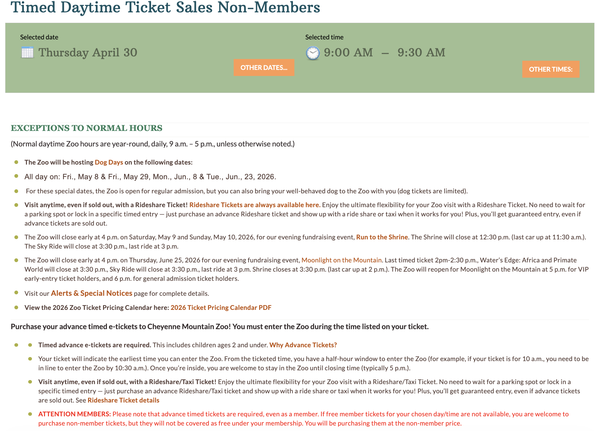
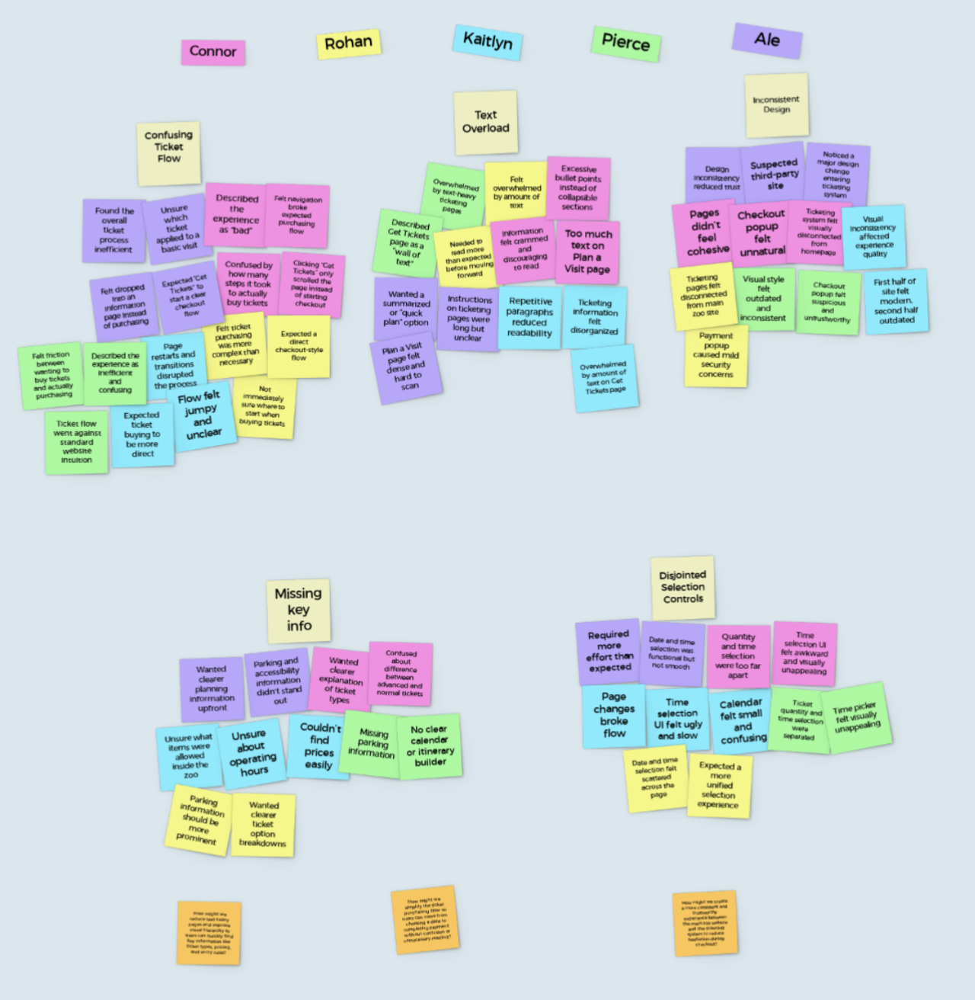
How Might We?
How might we make the ticket purchasing process feel safe, simple, and fast for zoo visitors?
Design
Problem Statement
Zoo-goers need a way to purchase tickets in order to see the animals at the zoo.
Task Flow
I mapped out the exact steps a user would take to get from the homepage to a confirmed ticket. This helped me see exactly what screens I needed to design so I didn't waste time on unnecessary stuff.
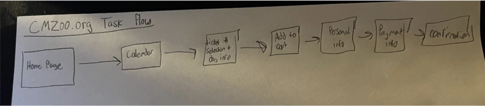
Low Fidelity Wireframes
I sketched out the basic layout of the screens without any colors or pictures. This was just to figure out where the buttons and text boxes should go so the flow made sense.
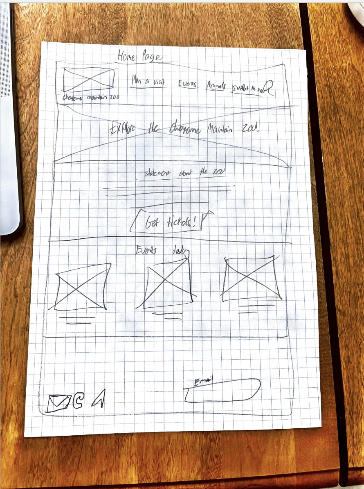
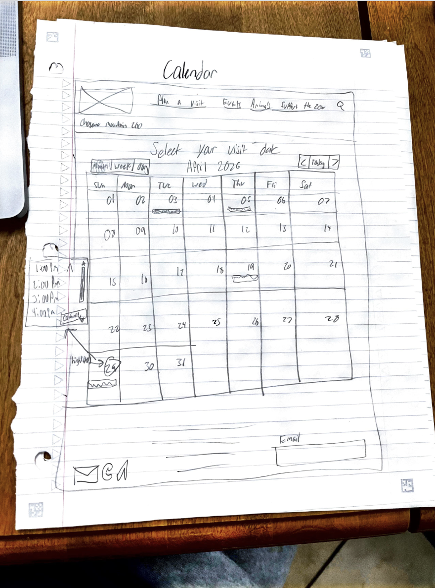
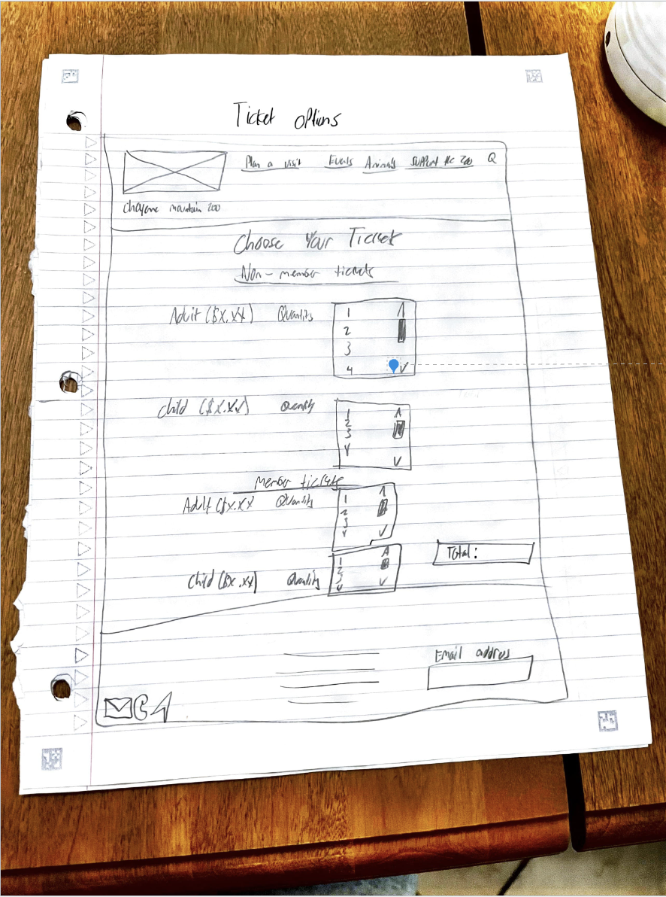
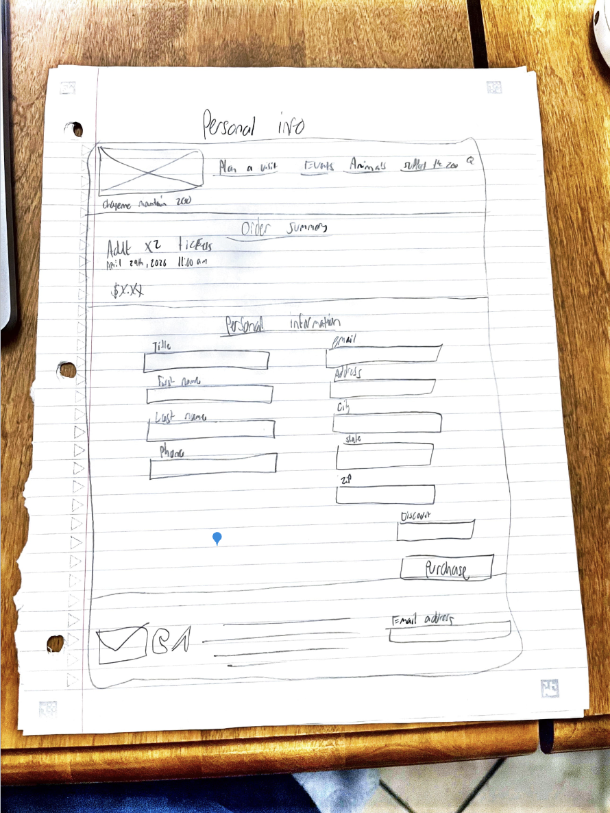
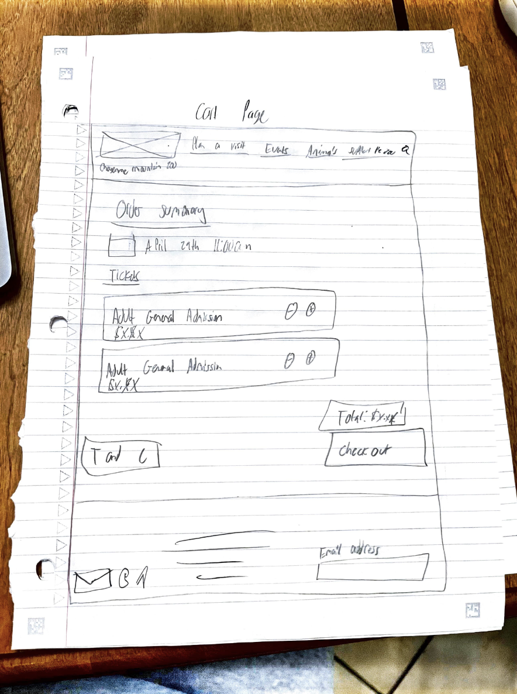
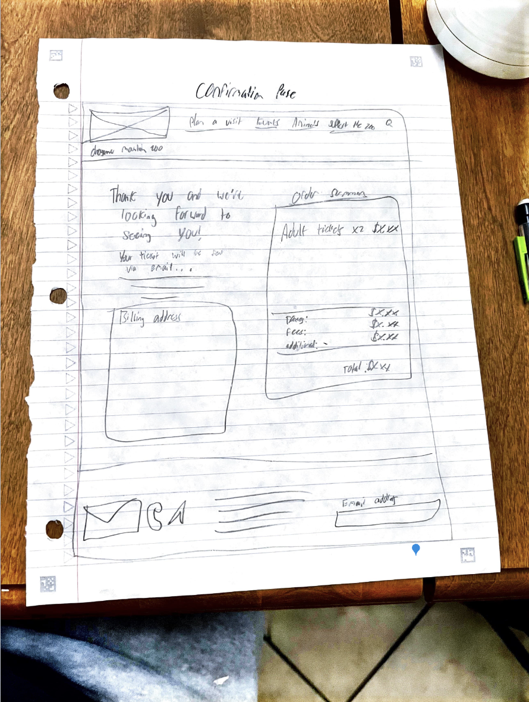
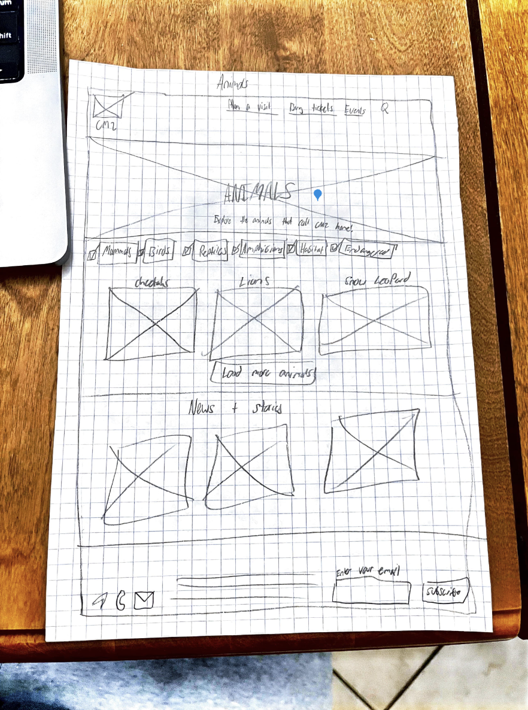
Mid Fidelity Wireframes
I moved my sketches into Figma and made them look more like a real website but still in grayscale. This helped me lock in the grid spacing and make sure everything lined up right before adding the fun stuff.

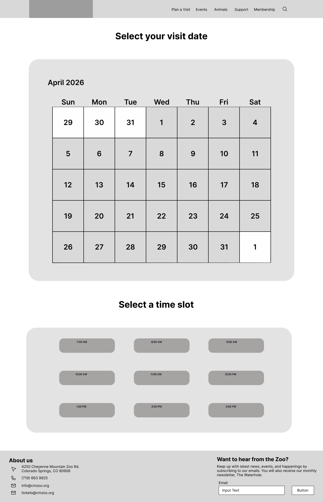


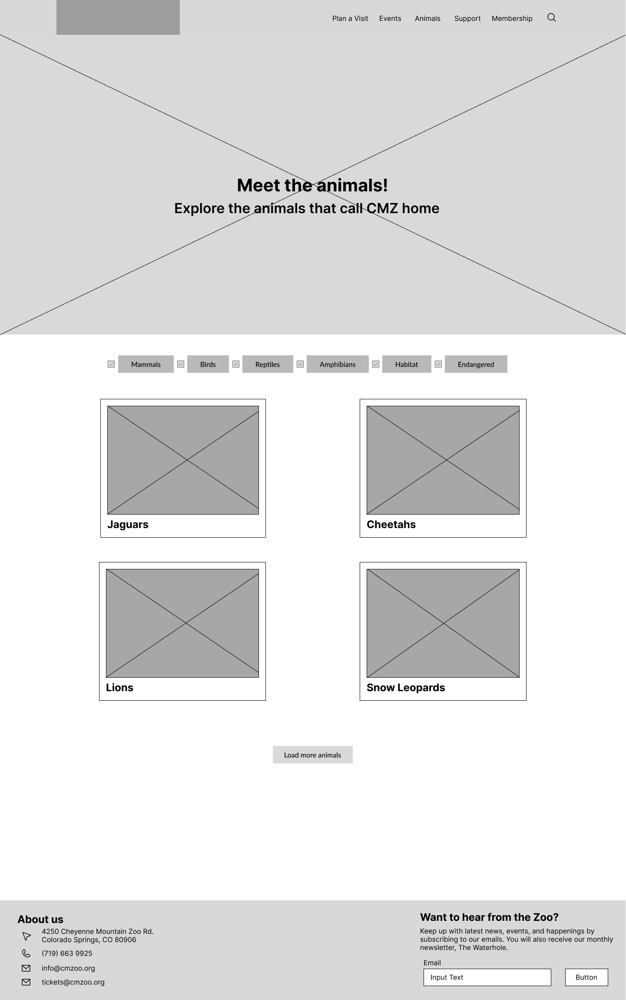
High Fidelity Prototype
I added all the real photos, colors, and fonts to make it look totally finished. Then I connected all the buttons in Figma so you could actually click through it like a real website.
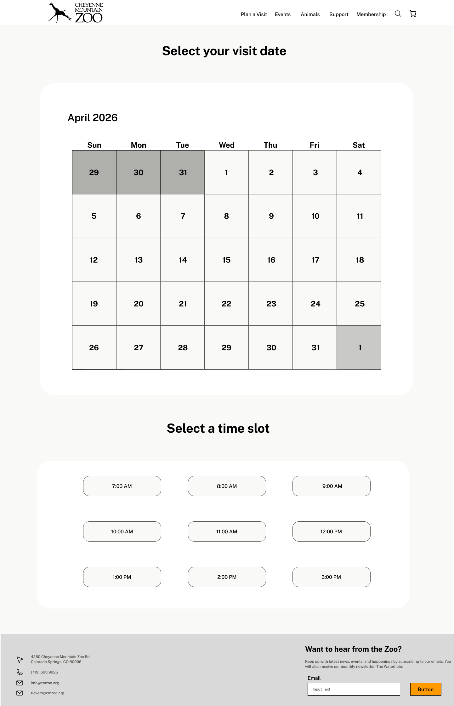


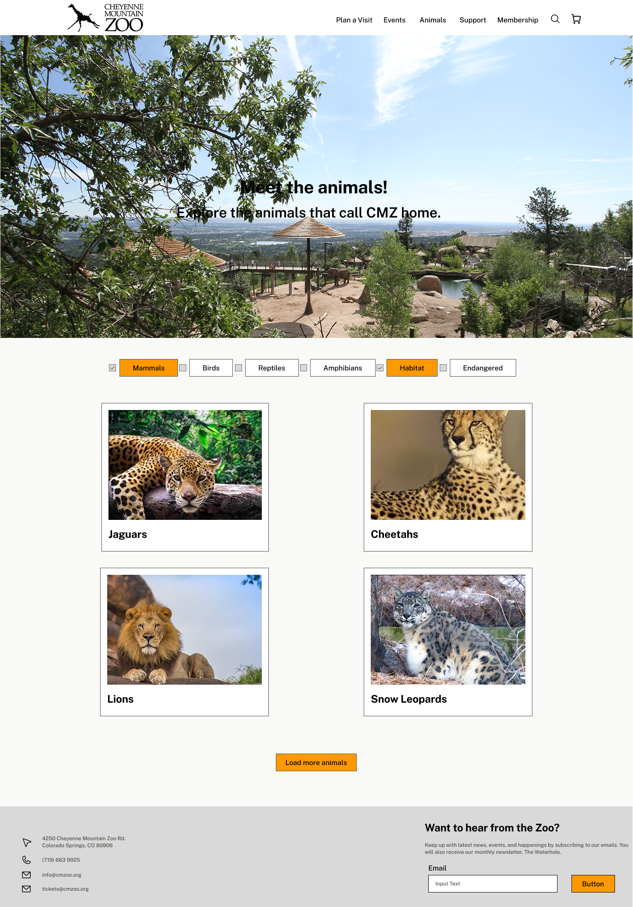
Instructor Feedback
My instructor pointed out that some of my spacing was a bit off. I went back and fixed my grid so everything was spaced consistently and made sure that all buttons looked interactable.
Evaluation & Results
Testing the Prototype
I had three new people test my high-fidelity prototype using a discussion guide I made. The biggest pain point was my cart page, because I put the checkout button above the extra ticket options, which confused everyone. They also thought the final payment button just saying "Checkout" again was weird.
Updates Made
To fix those pain points, I completely rearranged the cart page so the extra tickets are at the top and the checkout button is pinned to the very bottom. I also changed the final payment button to say "Complete Purchase" and added a little lock icon so it feels more secure.
Reflection
Future Plans
If I had more time, I would definitely design out the mobile version of the site since most people probably buy tickets on their phones. I'd also want to add a feature where you can see the ticket prices right on the calendar before you click a day. My next step would be to test the updated prototype again to make sure my cart page fixes actually worked.
Key Takeaways
The biggest thing I learned from this project is that what makes sense to me as the designer might be totally confusing to the user. User testing is honestly a lifesaver because it catches those dumb mistakes like my cart page layout. I also learned how important it is to keep things simple instead of overloading the screen with info.